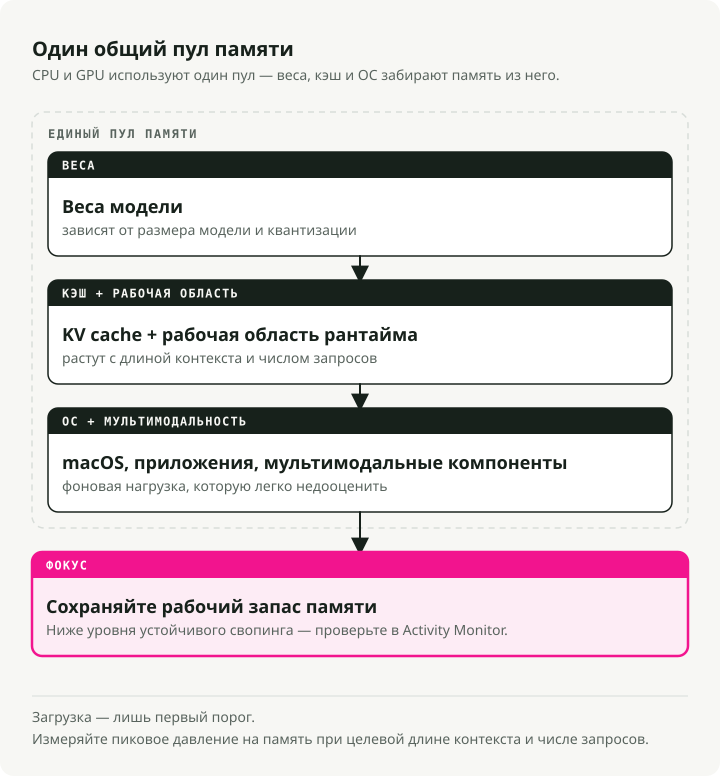
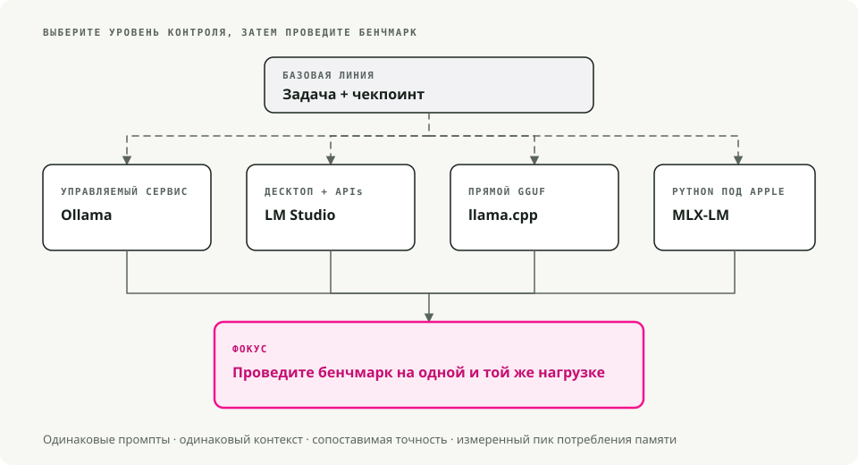

Автоматический перевод
Эта статья была автоматически переведена с оригинальной английской версии.
Локальные LLM на macOS: Ollama, LM Studio, llama.cpp, MLX и Apple Silicon
Постоянная отправка каждого запроса в сторонний API быстро надоедает, особенно когда половина запросов сводится к просьбам вроде «перепишите этот абзац» или «какова схема JSON для этого». Локальные LLM решили эту проблему для меня на чипах Apple Silicon быстрее, чем я ожидал. Модель объёмом 7 миллиардов параметров при 4-битной квантовке комфортно работает на MacBook с 16 ГБ памяти, причём весь процесс обработки происходит прямо на клавиатуре.
Остаётся открытым вопрос: каким приложением управлять этим процессом. Ollama, LM Studio, llama.cpp, MLX и ещё несколько инструментов используют похожие движки инференса и одни и те же файлы формата GGUF. Различия заключаются в степени сложности взаимодействия с моделью: с одной стороны — просто двойной клик и ввод текста; с другой — необходимость компиляции из исходного кода и последующего изучения документации.
Кратко: используйте Ollama для простого локального API, LM Studio — для графического интерфейса и конечной точки, совместимой с OpenAI, llama.cpp — когда вам нужен прямой контроль над процессом инференса в формате GGUF, а MLX — если требуются рабочие процессы на Python, оптимизированные под Apple Silicon.
Основные понятия локальных LLM на macOS
- Инференс: запуск модели с целью генерации текста.
- Квантование (GGUF): техника сжатия размера модели с минимальными потерями качества. Вы увидите файлы с такими именами, как
llama-3-8b-Q4_K_M.gguf. ЭтоQ4под «частью» имеется в виду 4-битная квантовка, которая требует гораздо меньше оперативной памяти по сравнению с полноценными 16-битными весами. - Apple Silicon (Metal): чипы серии M от Apple делят оперативную память между ЦП и ГПУ (компания Apple называет это «единой памятью»). Именно поэтому MacBook с 32 ГБ или 64 ГБ может загружать модели, для обработки которых на ПК потребовалась бы дорогая специализированная ГПУ.
Предварительные требования
- Аппаратное обеспечение: вам понадобится Mac с процессорами Apple Silicon (M1 до M4). Интел-маки тоже подойдут, но их работа будет заметно медленнее.
- ОЗУ:
- 8 ГБ: достаточно для небольших моделей (Mistral 7B, Llama 3 8B).
- 16 ГБ и более: удобно для крупных моделей и выполнения нескольких задач одновременно.
- Пространство на диске: модели занимают много места. Для начала рекомендуется выделить примерно 10–20 ГБ.

1. Ollama — вариант «работает сразу»
Скачать: ollama.com
Представьте Ollama как «Docker для больших языковых моделей». Он оборачивает llama.cpp движок в нативном пакете для macOS, который загружает модели по мере необходимости и автоматически направляет вычисления через Metal. Вы устанавливаете его, выполняете одну команду — и можете начинать общение. Это самый простой способ, если вам просто нужен рабочий LLM и HTTP-эндпоинт, к которому можно подключить свой код.
Пример рабочего процесса
# 1. Download and run Llama 3 (it auto-downloads if needed)
ollama run llama3
# 2. Use it in your code via the local API
curl http://localhost:11434/api/generate -d '{
"model": "llama3",
"prompt": "Explain quantum computing to a 5-year-old",
"stream": false
}'
Преимущества и недостатки
| ✅ Преимущества | ❌ Недостатки |
|---|---|
Самая простая настройка (перетащить и отпустить) .dmg) |
Основное приложение имеет закрытый исходный код. |
Чистый интерфейс командной строкиollama list, ollama pull) |
Менее детальный контроль над параметрами генерации |
| Большая библиотека заранее настроенных моделей |
2. LM Studio — визуальный эксплоратор
Скачивание: lmstudio.ai
LM Studio — это решение, ориентированное прежде всего на графический интерфейс. Он оснащён браузером в стиле App Store для прямого поиска в HuggingFace, поддерживает формат MLX от Apple наряду с GGUF (который может работать быстрее на некоторых моделях Mac), а также предоставляет локальный сервер, совместимый с OpenAI. Поэтому существующий клиентский код, уже взаимодействующий с OpenAI, в большинстве случаев продолжает работать без изменений.
Пример рабочего процесса
Вы можете использовать официальный Python SDK или любой клиент, совместимый с OpenAI, направленный на локальный сервер:
# Using the official LM Studio SDK
from lmstudio import LMStudio
client = LMStudio()
response = client.complete(
model="llama-3-8b",
prompt="Write a haiku about debugging."
)
print(response.content)
Преимущества и недостатки
| ✅ Преимущества | ❌ Недостатки |
|---|---|
| Отточенный интерфейс, удобный в использовании | Интерфейс пользователя имеет закрытый исходный код. |
| Нативная поддержка моделей GGUF и MLX | Более крупный размер загрузки (~750 МБ) |
| Встроенный RAG (чат с вашими PDF-файлами) |
3. llama.cpp — инструмент для продвинутых пользователей
Репозиторий: github.com/ggml-org/llama.cpp
Это движок, вокруг которого построены практически все остальные инструменты. Если вы хотите максимальную производительность, самые новые функции сразу после их появления или встроить LLM в собственное приложение на C++, то именно здесь ваш источник. Он работает непосредственно на аппаратном обеспечении и имеет небольшой размер, однако цена этого — необходимость самостоятельного управления всем: загрузками, форматами данных и десятками флагов командной строки.
Пример рабочего процесса
# 1. Install via Homebrew
brew install llama.cpp
# 2. Download a model manually (e.g., from HuggingFace)
huggingface-cli download TheBloke/Llama-3-8B-Instruct-GGUF --local-dir .
# 3. Run inference with full control
llama-cli -m llama-3-8b-instruct.Q4_K_M.gguf \
-p "Write a python script to sort a list" \
-n 512 \
--temp 0.7 \
--ctx-size 4096
Преимущества и недостатки
| ✅ Преимущества | ❌ Недостатки |
|---|---|
| Полный контроль над каждым параметром | Крутая кривая обучения (только CLI). |
| Разрешение MIT (открытый исходный код) | Ручное управление моделями |
| Очень легкий (<30 МБ) |
4. GPT4All — приоритет конфиденциальности и технология RAG
Скачивание: gpt4all.io
GPT4All основан на двух ключевых принципах: конфиденциальности и работе с документами. Его главная функция — LocalDocs — позволяет указать приложению папку с PDF-файлами, заметками или кодом, после чего можно напрямую вести чат с содержимым этих файлов. Вся обработка происходит офлайн без передачи каких-либо телеметрических данных. Это самый простой способ настроить рабочую среду RAG на своем устройстве без необходимости писать какой-либо код.
Преимущества и недостатки
| ✅ Преимущества | ❌ Недостатки |
|---|---|
| LocalDocs RAG функционирует отлично сразу после установки. | Только GUI (без режима без графического интерфейса) |
| Полностью офлайн и приватно | Более высокое потребление ресурсов по сравнению с Ollama |
| Кроссплатформенность (Mac, Windows, Linux) |
5. KoboldCPP — для создателей историй
Репозиторий: github.com/LostRuins/koboldcpp
Форк llama.cpp Направлено на творческое писательство и ролевые игры в стиле настольных игр. Работает как локальное веб-приложение с инструментами для генерации длинных текстов: разделом «Информация о мире», функцией хранения данных персонажей и методами поддержания целостности сюжета, которые помогают удерживать модель в рамках заданных параметров при обработке тысяч токенов. Целевая аудитория — писатели и люди, организующие текстовые ролевые игры; если вам в основном нужны чат или возможности программирования, стандартный интерфейс покажется слишком ограниченным.
Пример рабочего процесса
# 1. Download the single binary
wget https://github.com/LostRuins/koboldcpp/releases/latest/download/koboldcpp-mac.zip
# 2. Run it (launches a web server)
./koboldcpp --model llama-3-8b.gguf --port 5001 --smartcontext
Преимущества и недостатки
| ✅ Преимущества | ❌ Недостатки |
|---|---|
| Мощные инструменты для творческого письма | Нишевый интерфейс (не очень подходит для программирования/чата) |
| Одноконтейнерное исполняемое приложение (без установки) | Лицензия AGPL (ограничивает коммерческое использование) |
Приз за особый вклад: MLX-LM
Если вы разработчик на Python, работающий с Apple Silicon, обратите внимание на MLX-LM от Apple. Это фреймворк, оптимизированный для чипов серии M, и на подходящем оборудовании он зачастую является самым быстрым способом запуска модели локально. Недостаток заключается в том, что он менее удобен в использовании по сравнению с Ollama: больше кода на Python и меньше ограничений.
Краткое резюме: какой инструмент подойдёт вам?
Краткая дерево принятия решений:

Таблица быстрого сравнения
| Инструмент | Интерфейс | Уровень сложности | Лучшая функция |
|---|---|---|---|
| Ollama | CLI / панель меню | ⭐ (Легко) | Опыт «работает просто» |
| LM Studio | Графический интерфейс пользователя | ⭐ (Легко) | Открытие моделей и интерфейс пользователя |
| GPT4All | GUI | ⭐ (Легко) | Чат с локальной документацией (RAG) |
| KoboldCPP | Веб-интерфейс | ⭐⭐ (Средний уровень) | Инструменты для творческого письма |
| llama.cpp | CLI | ⭐⭐⭐ (Сложно) | Чистая производительность и управление |
Что выбрать на самом деле
- Начните с Ollama, если вам просто нужно что-то запустить уже сегодня.
- Обратитесь к LM Studio, если вы предпочитаете сначала визуально просмотреть модели.
- Выберите llama.cpp, когда вам необходим полный контроль над процессом инференса.
Основные выводы
- Ollama — это самый быстрый способ создания локального сервера моделей для разработки.
- LM Studio демонстрирует наилучшие результаты там, где требуется графический интерфейс для рабочего стола и простой способ исследования моделей.
- llama.cpp обеспечивает наиболее прямой контроль над моделями GGUF и флагами выполнения низкого уровня.
- MLX представляет собой нативный путь для Apple Silicon в тех случаях, когда вы уверенно владеете Python и работаете с форматами моделей MLX.
Список литературы
- Ollama на GitHub - выполнение локальной модели и API. Документация LM Studio - Графический интерфейс и локальный сервер для больших языковых моделей. llama.cpp на GitHub - Среда выполнения моделей в формате GGUF. Документация Apple MLX - Фреймворк для работы с массивами в Apple Silicon.